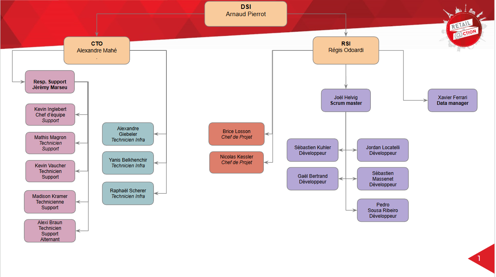
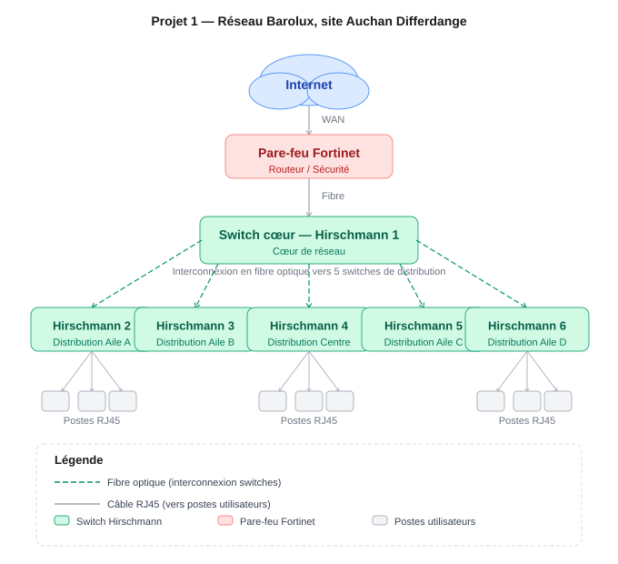
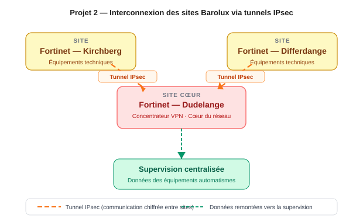
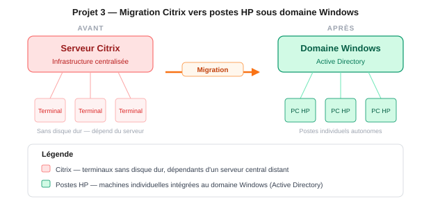
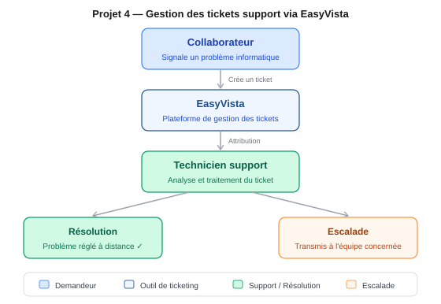
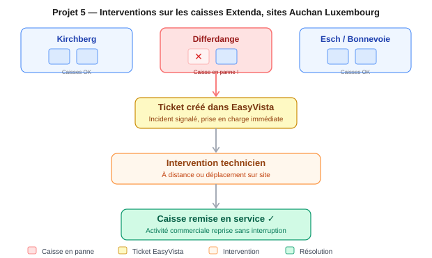

Je m’appelle Alexi Braun. Je suis actuellement en deuxième année de BTS SIO,
spécialité SISR — ce qui veut dire que je me forme à la gestion des systèmes
informatiques et des réseaux d’entreprise.
Depuis le début de ma formation, j’ai toujours voulu comprendre comment les choses
fonctionnent concrètement : comment un ordinateur s’intègre dans un réseau
d’entreprise, comment les données circulent d’un site à l’autre, comment on
accompagne un utilisateur lorsqu'un équipement ou un service cesse de fonctionner.
Mon alternance chez Auchan Luxembourg et Barolux m’a offert précisément cette opportunité :
m’impliquer sur des missions concrètes dès la première année. J’ai
appris à travailler en équipe, à gérer des situations imprévues, à m’adapter
rapidement — et à prendre confiance dans mes interventions.
Ce portfolio résume ce que j’ai réalisé, ce que j’en ai retenu, et ce que cela
m’a apporté au-delà des compétences techniques.
Compétences
Des domaines techniques clairement identifiés
Cette section regroupe les compétences que je mobilise le plus régulièrement dans ma
formation, dans mes projets et au sein des entreprises où j’ai travaillé.
Systèmes
Administration de postes, environnement Windows et support utilisateur.
WindowsActive DirectoryDéploiement de postesSupport utilisateur
Réseau
Déploiement d’infrastructures physiques et compréhension de l’architecture réseau.
Outils utilisés pour le support, la gestion d’incidents et le suivi des demandes.
EasyVistaGLPI
Entreprises
Deux entreprises, deux réalités du terrain
Mon alternance m’a fait vivre deux environnements très différents : d’un côté une
grande enseigne de distribution avec des dizaines de magasins à maintenir, de l’autre
une filiale technique spécialisée dans les réseaux et l’infrastructure des bâtiments.
Auchan Luxembourg
Auchan Luxembourg, c’est une dizaine de sites répartis sur tout le pays —
hypermarchés, supermarchés, galeries commerciales. Derrière chaque magasin,
il y a une infrastructure informatique à maintenir en permanence : des centaines
de postes, des caisses, des serveurs, des réseaux. C’est dans ce contexte que
j’interviens au quotidien, au sein du service support.
Mon rôle
Au cœur du support informatique des magasins
Mon rôle chez Auchan, c’est d’être le premier point de contact quand
quelque chose ne fonctionne plus. Un ordinateur qui ne démarre pas, une caisse
bloquée, un nouveau poste à préparer pour un collaborateur — c’est mon périmètre.
Je gère les demandes, je les résous quand c’est possible, je les transfère aux
bonnes équipes sinon.
Support utilisateurGestion de ticketsDéploiement de postesEasyVista
Ce que j’en ai retenu
Travailler vite sans bâcler. Comprendre la demande avant d’agir.
Savoir expliquer clairement à quelqu’un qui n’est pas informaticien ce
qu’on est en train de faire — et pourquoi.
Mon équipe
Une équipe support soudée et réactive
Je fais partie d’une petite équipe dédiée au support. On se répartit les
demandes, on se donne des coups de main quand une situation est complexe, et
on assure une disponibilité continue pour que les magasins puissent fonctionner
sans interruption. C’est un vrai travail d’équipe, où la communication compte
autant que la technique.
Travail d’équipeRéactivitéQualité de service

Organigramme de l’équipe support — cliquer pour agrandir.
Mon site principal
Les bureaux de Dudelange — ma base de travail
Le siège du service informatique est basé à Dudelange, dans la zone Eurohub Sud.
C’est là que se trouve mon équipe, que je prépare les équipements, que je traite
les tickets à distance — et d’où je pars pour les interventions dans les magasins
à travers tout le Luxembourg.
Le service support couvre l’ensemble des sites Auchan au Luxembourg. Chaque magasin est un terrain d’intervention potentiel — les hypermarchés sont mis en évidence.
HypermarchéHypermarché — Site Projet 1Auchan DriveMyAuchanBase IT — Dudelange

Barolux
Barolux est une filiale technique du groupe Auchan Luxembourg. Sa spécialité :
assurer la maintenance et le bon fonctionnement des équipements dans les
bâtiments du groupe — chauffage, sécurité incendie, systèmes automatisés.
Pour que l’ensemble fonctionne, un réseau fiable reliant les sites entre eux
est indispensable. C’est dans ce cadre que j’ai eu un rôle concret.
Mon rôle
Construire le réseau qui fait circuler les données entre les sites
Chez Barolux, j’ai participé à la mise en place des réseaux qui permettent
aux équipements techniques des bâtiments de communiquer entre eux. Concrètement :
tirer des câbles, installer des équipements réseau dans les armoires
techniques, relier les sites entre eux à distance de façon sécurisée.
C’est un travail de terrain, physique, où chaque câble mal posé peut faire
tomber une partie du réseau.
Câblage réseauFibre optiqueÉquipements réseauSécurisation des échanges
Ce que j’en ai retenu
La rigueur du travail terrain : ici, une erreur de câblage, c’est une
panne. J’ai appris à être précis, méthodique, et à vérifier chaque étape
avant de passer à la suivante.
Projets
Ce que j'ai fait, concrètement
Voici les projets qui m'ont le plus marqué durant mon alternance. Pour chacun,
j'explique ce que j'ai réalisé, ce que cela impliquait concrètement, et ce que
j'en ai retenu sur le plan personnel et professionnel.
Projet 1
Déploiement d’un réseau dédié Barolux sur le site Auchan de Differdange
Projet réalisé dans le cadre de mon expérience chez Barolux, avec une forte
dimension terrain autour du câblage, de l’architecture physique et du
déploiement de matériel réseau.
BaroluxHirschmannFibre optiqueRJ45
Situation
Barolux avait besoin d’un réseau indépendant sur le site Auchan de Differdange
pour relier ses équipements techniques — chauffage, régulation, automatismes.
Ce réseau devait être séparé du réseau Auchan et couvrir l’ensemble du bâtiment.
Mon rôle concret
J’ai participé à l’installation complète sur le terrain : pose et branchement
de 6 équipements réseau (appelés switches) dans les armoires techniques,
tirage de câbles à travers le bâtiment, création manuelle de câbles réseau,
et interconnexion des équipements via la fibre optique.
Ce que j’ai fait, étape par étape
Installation de 6 équipements réseau (switches Hirschmann) dans les armoires du site.
Mise en place d’une architecture en étoile : un équipement central relié aux 5 autres.
Connexion entre les équipements par fibre optique pour des liaisons rapides et stables.
Câblage dans les baies existantes et fabrication manuelle de câbles RJ45.
Participation à la conception du schéma du réseau.
Ce que j’ai fait a permis de…
Donner à Barolux un réseau opérationnel sur le site de Differdange, capable
de relier tous ses équipements techniques dans un même réseau indépendant.
Sans ce déploiement, les équipements de régulation et d’automatismes
n’auraient pas pu communiquer entre eux sur le site.
Ce que j’en ai retenu
C’était la première fois que je déployais un réseau complet en conditions
réelles. J’ai compris que la théorie et le terrain, c’est très différent :
les contraintes physiques, la logique du câblage, la précision que ça
demande. Ça m’a rendu beaucoup plus à l’aise sur tout ce qui touche
à l’infrastructure réseau.

Schéma du réseau Barolux déployé sur le site de Differdange — cliquer pour agrandir.Site Auchan de Differdange — lieu du déploiement réseau.
Projet 2
Relier les sites Barolux entre eux de façon sécurisée
Barolux intervient sur plusieurs sites. Pour récupérer les données de ses
équipements à distance, il fallait créer des connexions sécurisées entre
ces sites — sans passer par un accès public non protégé.
Les équipements techniques de Barolux (régulation, chauffage, automatismes)
sont répartis sur plusieurs bâtiments. Les techniciens avaient besoin de
consulter les données de ces équipements depuis un seul endroit, sans se
déplacer sur chaque site.
Mon rôle concret
J’ai travaillé sur la configuration des pare-feux — des équipements qui
contrôlent ce qui entre et sort d’un réseau — pour créer des tunnels chiffrés
entre les sites — soit l’équivalent d’un tunnel privé et chiffré
établi entre deux sites distants, via Internet.
Ce que j’ai fait
Configuration des pare-feux Fortinet sur chaque site concerné.
Mise en place de tunnels chiffrés (IPsec) entre les sites pour sécuriser les échanges.
Tests de connectivité pour vérifier que les sites communiquaient correctement.
Ce que j’ai fait a permis de…
Permettre aux techniciens Barolux de consulter et superviser les données
de leurs équipements sur plusieurs sites depuis un seul point central,
sans déplacement. Les échanges entre sites sont chiffrés et sécurisés,
ce qui protège les données techniques de l’entreprise.
Ce que j’en ai retenu
J’ai compris comment une entreprise sécurise ses communications à distance.
Avant ce projet, je savais qu’un pare-feu "filtrait" le réseau — après,
je savais aussi le configurer pour un cas concret. C’est une compétence
directement liée à la cybersécurité.

Schéma d’architecture — tunnels IPsec entre les 3 sites Barolux via pare-feux Fortinet. Cliquer pour agrandir.
Projet 3
Migration Citrix vers des postes HP sous domaine Windows – Auchan Luxembourg
Auchan Luxembourg remplaçait une ancienne solution où les collaborateurs
travaillaient sur des terminaux sans disque dur par des ordinateurs individuels
intégrés au domaine Windows. J’ai pris en charge trois étapes clés :
la préparation des machines, leur remise en service auprès des utilisateurs,
et l’accompagnement dans la prise en main du nouvel environnement.
Auchan LuxembourgDéploiement de postesIntégration réseauPostes HP
Contexte
Les collaborateurs travaillaient sur des terminaux sans disque dur (solution Citrix),
entièrement dépendants d’un serveur central distant. Auchan a décidé de migrer
vers des ordinateurs individuels HP, autonomes et intégrés au domaine Windows
de l’entreprise.
1 — Préparation
Configuration des machines avant déploiement : démarrage de l’installation
automatique via le réseau (sans support amovible), vérification de l’intégration
au domaine Windows et de l’enregistrement correct dans l’annuaire informatique
de l’entreprise.
2 — Remise en service
Installation du poste sur le bureau du collaborateur concerné, vérification
du bon fonctionnement de l’ensemble des accès et applications métier,
puis validation avec l’utilisateur avant clôture de l’intervention.
3 — Accompagnement
Prise en charge des utilisateurs lors de la transition : réponse aux questions,
explication des différences avec l’ancienne solution Citrix, et orientation
vers les ressources disponibles pour faciliter la prise en main du nouvel
environnement Windows.
Ce que j’ai fait a permis de…
Donner à chaque collaborateur un poste opérationnel dès le premier jour,
intégré au réseau et à l’annuaire de l’entreprise, sans dépendance à une
infrastructure serveur centralisée. L’accompagnement a réduit les blocages
liés au changement d’environnement et facilité la reprise d’activité.
Ce que j’en ai retenu
Un déploiement ne s’arrête pas à l’installation technique. La qualité de
l’accompagnement est tout aussi déterminante : un utilisateur bien guidé
reprend son activité sans perte de temps, là où un utilisateur laissé sans
explication génère des tickets supplémentaires.

Schéma de migration — de l’infrastructure Citrix vers les postes HP intégrés au domaine Windows. Cliquer pour agrandir.
Projet 4
Quotidien — Maintien opérationnel du service informatique Auchan Luxembourg
Ce projet regroupe l’ensemble de mes missions de RUN au quotidien chez Auchan.
Ce n’est pas un projet ponctuel — c’est une mission permanente sur toute la durée
de mon alternance : support à distance via EasyVista, interventions terrain sur les
caisses Extenda, permanences et contrôle des indicateurs de service.
Auchan Luxembourg, c’est environ 1 350 salariés répartis sur une dizaine de sites.
Derrière chaque magasin, il y a une infrastructure à maintenir en permanence.
Mes missions s’inscrivent dans le cadre ITIL — le référentiel de bonnes pratiques
utilisé par Auchan pour structurer son service informatique : gestion des incidents,
des demandes de service, et respect des SLA (délais de résolution définis selon la
priorité de chaque ticket).
Volet 1 — Support à distance via EasyVista
Chaque jour, des collaborateurs rencontrent des problèmes informatiques.
Je prends en charge les demandes dans la file EasyVista, j’analyse le problème,
je contacte l’utilisateur si besoin et je résous ce que je peux à distance.
Si le problème dépasse mon périmètre, je le transfère à l’équipe concernée
avec un résumé clair. La gestion des comptes passe par PingOne, la solution IAM
d’Auchan — création, modification, désactivation de comptes utilisateurs.
Volet 2 — Interventions terrain sur les caisses Extenda
Les magasins utilisent le logiciel d’encaissement Extenda. Une caisse en panne,
c’est avant tout un dérangement direct pour le client : il attend, il ne peut pas
payer, il doit changer de file — parfois repartir sans ses achats. En heure de pointe,
une seule caisse hors service suffit à créer une situation tendue pour les clients
comme pour le personnel en caisse. Certaines pannes ne peuvent pas être résolues
à distance : je me déplace directement sur le site concerné pour intervenir et
remettre la caisse en service le plus vite possible. Je réalise également des
contrôles réguliers de l’état des caisses — une démarche proactive pour détecter
une anomalie avant qu’elle n’impacte un client.
Exemples concrets d’interventions
Réinitialisation de comptes bloqués via PingOne pour des collaborateurs qui ne pouvaient plus accéder à leur poste.
Résolution de problèmes d’imprimantes réseau dans les bureaux et en magasin.
Redémarrage et reconfiguration de caisses Extenda bloquées en heure de pointe, avec des clients en attente.
Remplacement d’une caisse défaillante par une caisse de secours pour maintenir l’activité commerciale.
Formation rapide d’un nouveau collaborateur sur l’utilisation du logiciel de caisse sur site.
Déplacement sur plusieurs sites dans la même journée pour traiter plusieurs incidents en parallèle.
Suivi des tickets non résolus, relances et respect des SLA définis par le service.
Permanences d’ouverture
Chaque matin, avant l’ouverture des magasins, une vérification complète est réalisée :
contrôle de la cohérence des chiffres de chaque site, vérification que l’ensemble
des systèmes est opérationnel — caisses, réseaux, applications métier. Si une
anomalie est détectée et non résolue à temps, nous avons le pouvoir de bloquer
l’ouverture d’un magasin. C’est une responsabilité importante : j’ai été amené
à assurer certaines de ces permanences seul, ce qui demande rigueur, sang-froid
et une prise de décision rapide et assumée.
Ce que ces missions permettent de…
Garantir que les magasins ouvrent dans les conditions prévues, que les collaborateurs
peuvent travailler sans blocage, et que l’activité commerciale n’est jamais interrompue
plus que nécessaire. Chaque permanence réussie, c’est une ouverture qui se passe
sans incident. Chaque ticket traité dans les délais, c’est un SLA respecté et un
utilisateur qui ne perd pas de temps. Chaque intervention terrain, c’est une caisse
remise en service avant que la file d’attente ne s’allonge.
Ce que j’en ai retenu
C’est la mission qui m’a le plus formé, parce qu’elle n’a pas de fin. Chaque jour
apporte une situation nouvelle, une demande différente, un utilisateur avec ses
propres contraintes. Un utilisateur bloqué est souvent stressé : j’ai appris
à être calme, aller droit au but, et adapter mon langage — un collaborateur DRH
n’a pas besoin de savoir ce qu’est un Active Directory, il a besoin de savoir
dans combien de temps il peut reprendre son travail. En magasin, j’ai développé
une vraie autonomie : arriver sur site, diagnostiquer, décider et agir.

Flux de traitement d’un ticket support — de la demande collaborateur à la résolution ou l’escalade. Cliquer pour agrandir.

Flux d’intervention terrain — de la détection d’une panne caisse à la remise en service sur site. Cliquer pour agrandir.
Veille informatique
L’évolution de l’authentification en cybersécurité
Dans le cadre de ma formation en BTS SIO SISR, je réalise une veille technologique
sur l’évolution des méthodes d’authentification — du mot de passe classique au MFA,
jusqu’aux passkeys —, en suivant les menaces actuelles et les évolutions réglementaires.
Sujet de veille
Protection des accès : du mot de passe aux passkeys
L’authentification est l’un des premiers remparts contre les cyberattaques.
Ce sujet me permet de suivre comment les méthodes évoluent — et pourquoi les
solutions traditionnelles comme le mot de passe seul ne sont plus suffisantes
face aux attaques modernes.
Mots de passeMFA / 2FAPasskeys (FIDO2)PhishingAttaques AiTMConformité RGPD
Contexte
Pourquoi ce sujet ?
Dans mon quotidien chez Auchan, la gestion des accès et des comptes utilisateurs
est une réalité concrète : comptes bloqués, réinitialisations de mots de passe,
droits d’accès. Comprendre les enjeux de l’authentification me permet de mieux
saisir les risques derrière ces opérations.
Sources suivies
Sources
ANSSI (Agence nationale de la sécurité des systèmes d’information)
Elle me permet de comprendre les enjeux réels de la sécurité des identités,
directement liés à mon option SISR. Elle nourrit aussi ma culture technique
sur les protocoles d’authentification modernes, utiles lors des missions
de support et d’administration.
Actualités récentes
Sources officielles
Sélection d’actualités issues de sources officielles (CNIL, CERT-FR / ANSSI) sur les thèmes de l’authentification, des mots de passe et de la sécurité des accès.
CNILMars 2025La CNIL publie sa recommandation officielle sur l’authentification multifacteur (MFA)▾
La CNIL a publié une recommandation encadrant l’usage du MFA au regard du RGPD. Elle précise quand le recours au MFA est recommandé, quels facteurs d’authentification sont conformes (connaissance, possession, inhérence), et identifie le risque de MFA fatigue — technique d’attaque consistant à submerger l’utilisateur de notifications push jusqu’à ce qu’il valide par erreur.
CNIL2025 – 2026Le MFA devient obligatoire de fait : la CNIL annonce des contrôles renforcés dès 2026▾
Dans le cadre de son plan stratégique 2025–2028, la CNIL a fait de la cybersécurité l’un de ses trois axes prioritaires. Elle annonce des contrôles renforcés dès 2026 pour vérifier la mise en place du MFA sur les grandes bases de données. L’absence de MFA pourra justifier l’ouverture d’une procédure de sanction.
CERT-FRJanvier 2025CVE-2024-55591 — Contournement d’authentification critique dans FortiOS activement exploité▾
Le CERT-FR a publié une alerte sur la vulnérabilité CVE-2024-55591 affectant FortiOS et FortiProxy. Elle permet à un attaquant distant non authentifié de contourner le mécanisme d’authentification de l’interface d’administration et d’obtenir des privilèges super-administrateur. Fortinet confirme une exploitation active dans la nature.
CERT-FRJanvier 2026ownCloud — Des milliers de comptes compromis via des identifiants volés par des maliciels▾
ownCloud a signalé de nombreux comptes compromis dont les identifiants avaient été récupérés sur des machines infectées. L’éditeur recommande d’activer le MFA, de renouveler les mots de passe et de rafraîchir toutes les sessions. Ce cas illustre que même un mot de passe fort ne protège pas si la machine est compromise — seul le MFA peut limiter les dégâts.
CERT-FR2022 — toujours d’actualitéVol de cookies de session : une technique qui contourne le MFA▾
Le CERT-FR rappelle que le MFA, bien qu’efficace contre les compromissions de mots de passe, ne protège pas contre le vol de jetons de session. Les cookies volés permettent de rejouer une session déjà authentifiée, contournant ainsi l’ensemble du processus MFA. Cette menace est à la base de nombreuses attaques modernes ciblant les navigateurs.
CNIL2024Mots de passe : les recommandations officielles de la CNIL pour les entreprises▾
La CNIL a mis à jour ses recommandations sur les mots de passe en entreprise : longueur minimale de 12 caractères avec complexité, ou 8 caractères avec MFA obligatoire. Elle précise les exigences de stockage (hachage + sel), les règles de renouvellement, et les bonnes pratiques pour les comptes à privilèges — tous soumis à des exigences renforcées.
Cette alternance n'aurait pas eu la même valeur sans les personnes qui m'ont
accompagné, encadré et donné de vraies responsabilités dès le premier jour.
Merci à Kevin Inglebert, mon chef d'équipe, pour son encadrement
au quotidien, sa disponibilité et les conseils qu'il m'a apportés dans ma montée
en compétences. C'est grâce à lui que j'ai pu progresser aussi vite sur le terrain.
Merci à Jérémy Marseu, mon responsable, pour la confiance accordée
dès le début de l'alternance et pour m'avoir confié de vraies responsabilités
opérationnelles — notamment les permanences d'ouverture.
Merci à Alexandre Mahé, CTO, et à Arnaud Pierrot,
DSI, pour leur engagement en faveur de la formation des jeunes au sein du groupe
et pour avoir rendu possible cette expérience.
Enfin, merci à Auchan Luxembourg pour m'avoir offert cette opportunité.
Intégrer une structure de cette envergure en alternance, c'est une chance rare —
elle m'a permis de me confronter à des situations réelles, de prendre des responsabilités,
et de grandir aussi bien techniquement qu'humainement.
Contact
Une section sobre et professionnelle
Mes coordonnées complètes et mon CV peuvent être présentés lors d’un entretien ou
sur demande. Cette version publique du portfolio reste volontairement allégée.
Version publiqueLes coordonnées personnelles ne sont pas affichées sur le site en ligne.
CVLa version détaillée du CV est communiquée dans un cadre privé.
DisponibilitéLes informations complémentaires peuvent être présentées lors d’un échange ou d’un entretien.